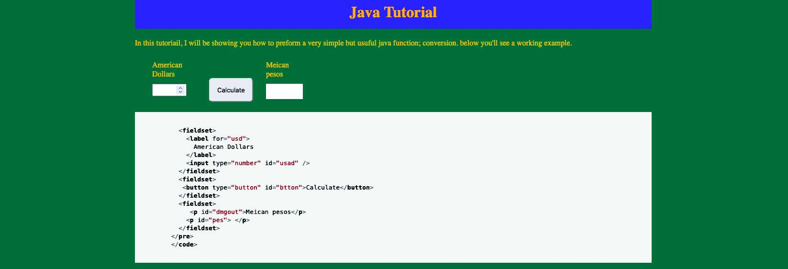
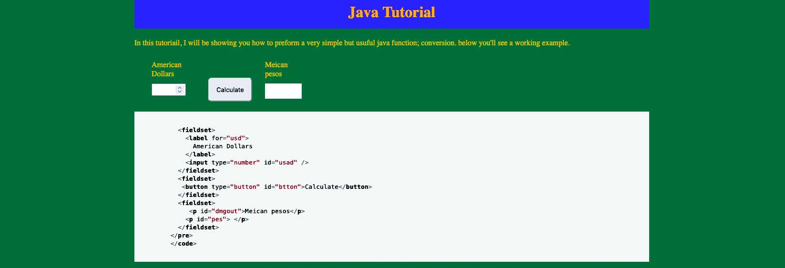

the Client is looking for a site that can instruct novice Javascript coders on a beginner level project.This was a personal project of mine that i feel showcases some of my Javascript abilities. For the purposes of this project I created a fake site called Java Tutorials.Java tutorial provides free online documentation to assist those starting their coding careers. They pride themselves in providing easy to follow instructions on most of the basic elements of coding. Their hope is to expand their site, and become a trusted source for all coders.
We are looking to become an established resource for up and coming coders. We would like a page to show our users how to code a simple java script. This site should explain the chosen function well, and it should be visibly appealing without being distracting
My focus of this site was making sure that someone who had never coded Java would be able to not only code this script, but understood what they were coding. To accomplish this I made sure the code was on an o white almost gray background so it was easy to read and color complemented this. The code is clearly separated visually from the instructions to give focus to what you are trying to learn.
Java tutorial was able to start their catalog of tutorials with a basic, yet foundational piece of javascript. The code was presented easy enough that it was used often as a resource, and Java tutorial was able to nd a loyal base of users.